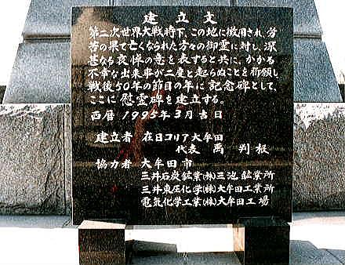

（2000年3月撮影）
左端が「馬渡社宅の押入れ壁に記されていた墨書」の記念碑。
右端がハングル文字で書かれた徴用犠牲者慰霊碑碑文。
「愛しき父母、妻子、兄弟と離別を余儀なくされ、この遠い異国の地にて、あらゆる難をへられた英霊達よ。夢寂にも偲んだ故
国山河を遠くし、ここに眠る大韓人孤魂の無情の念、いつはれるやら。第二次世界大戦時、この地に徴用され、過酷な労働の果て
に、不帰の人となられ、はや五十星霜。歳月はすぎしとも、死してなおその不運の身上をどうして忘れることができよう。過ぎし
日の不幸が再び訪れることの無きよう・・・・。かなしき英霊達よ、安らかに眠り給え 合掌」と記されている。
＊「馬渡社宅」壁書の完全な解釈は難しい。
ここ甘木公園に建つ「徴用犠牲者慰霊碑」隣の「馬渡社宅」壁書記念碑には、「遙か異国の地にあって、引き裂かれた恋
人や妻に思いを馳せ、自らの不遇を嘆き、懐かしき故国を偲ぶ、切々たる心情が記されている」と説明されている。
そして、馬渡社宅跡に建つ記念碑には、「自分たちは流刑のようにして連行されてきた。
しかも自分達をこのようにした力は敗れる。生活をしていた村から海を渡り、この囲いの中にいるのは朝鮮京畿道長端郡長道面本村、
高陽郡呂州郡の者達である。穂の心で人に助けを求めないで自分達の心を一つにして頑張っていけば、必ず天は見捨てない。」と
解釈、説明されている。
また、大牟田市石炭産業科学館に展示されている「馬渡社宅」壁書にあっては、「この壁書きは、強制連行された人たちが、
故郷を想う気持ちを、押入れの中の壁に書きつづったものといわれています」と説明がある。
三者三様、同じものでもその解釈は統一されていない。
＊「徴用」とは、国語辞典によると、「国家が権力で国民を動員し、強制的に働かせること」とある。言葉は言いようである。
戦時中は、朝鮮半島を武力により日本の統治下におき、日本国民として強制的に使役し、敗戦後は外国人として何の補償も無く
切り捨てた日本の政財界。その罪はいまだ清算されていない。
ちなみに、福岡県特別高等課調査に基づく昭和19年1月末現在の「労務動員計画に依る移入半島人労務者に関する調査表」(県庁
文書)によると、連行朝鮮人の数について、
三井三池炭鉱 移入者数2376、逃走者数743、死亡15
電気化学工業大牟田工場 移入者数 572、逃走者数234、死亡 1
と記載されてある。
なお、「特別高等課」とはいわゆる特高警察のことであり、社会運動、言論、思想などを取り締まった旧制の警察機構のことで、
1928年(昭和3年)までに各都道府県に設置され、内務省の直轄で、治安維持法違反、不敬罪などの容疑で多数を検挙した。民族運動
の弾圧も担当し、朝鮮人の監視は重要任務であった。しかし敗戦により、昭和20年10月13日ＧＨＱ覚書に基づき廃止解体された。

（2000年3月撮影）